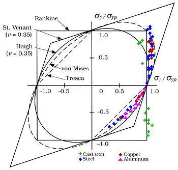
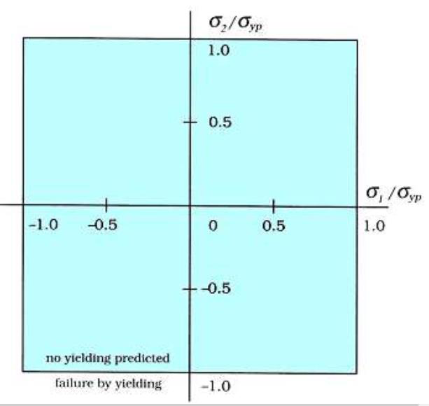
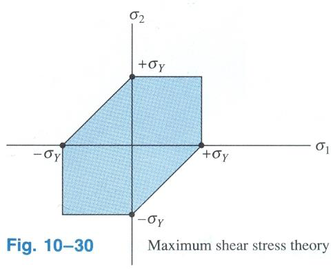
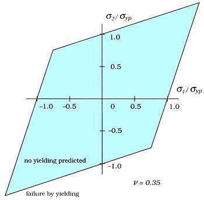
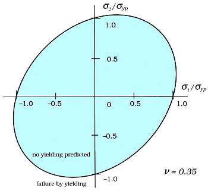
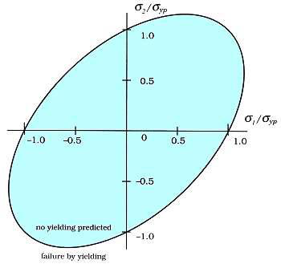
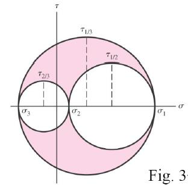
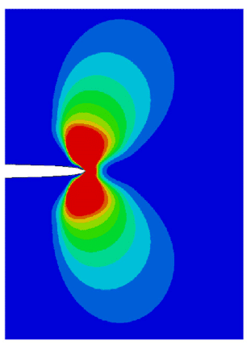
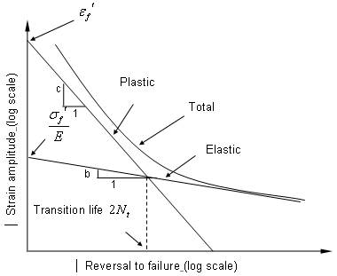

Each question is collapsed — read it, try to answer from memory, then click to reveal the full model answer, figures and worked example. Every formula lists what its symbols mean and how to use it. Failure theories lead, because they anchor most of Section A and Q1.
When does a part fail under combined stress? Compare the stress state to a simple tension test using one of the five classical theories. Exam focus: Rankine (brittle), Tresca and von Mises (ductile).
| Theory (a.k.a.) | Criterion | Best for | Yield surface |
|---|---|---|---|
| Max principal stress (Rankine) | \(\sigma_1\ge\sigma_{ult}\) | Brittle | Square |
| Max shear stress (Tresca) | \(\sigma_1-\sigma_3\ge\sigma_y\) | Ductile — conservative | Hexagon |
| Max principal strain (St. Venant) | \(\varepsilon_1\ge\varepsilon_y\) | Rarely used | Rhombus |
| Max total strain energy (Haigh) | \(U\ge U_{y}\) | — | Ellipse |
| Max distortion energy (von Mises) | \(\sigma'\ge\sigma_y\) | Ductile — most accurate | Ellipse |
Tresca (maximum shear stress) — yielding starts when the largest shear stress equals the tension-test shear value \(\sigma_y/2\):
\[ \tau_{\max}=\frac{\sigma_1-\sigma_3}{2}=\frac{\sigma_y}{2}\;\Longrightarrow\; \sigma_1-\sigma_3=\sigma_y \]von Mises (distortion energy) — general 3-D and the biaxial case \(\sigma_3=0\):
\[ \sigma'=\sqrt{\tfrac12\big[(\sigma_1-\sigma_2)^2+(\sigma_2-\sigma_3)^2+(\sigma_3-\sigma_1)^2\big]}\ge\sigma_y,\qquad \sigma'_{\text{biaxial}}=\sqrt{\sigma_1^2-\sigma_1\sigma_2+\sigma_2^2} \]How to use: find the principal stresses, plug into a criterion, and yielding is predicted the moment the left side reaches \(\sigma_y\). Factor of safety \(n=\sigma_y/\sigma'\) (von Mises) or \(n=\sigma_y/(\sigma_1-\sigma_3)\) (Tresca).

The five yield surfaces individually (course slides): a point inside is safe, on the boundary it yields.





Any stress point inside a surface is safe; on the surface it yields. Because the Tresca hexagon lies inside the von Mises ellipse, Tresca reaches its boundary sooner → it predicts yielding at a lower load → it is the safer / more conservative theory. Von Mises is less conservative but matches experiment better.
Total strain energy splits into a volumetric part (change of size, driven by hydrostatic stress) and a distortional part (change of shape). Experiments show hydrostatic pressure alone does not yield metals, so only the distortion energy should count toward yield — which is exactly what von Mises measures. That physical reasoning is why it beats both Tresca and the total-strain-energy (Haigh) theory.
Everything upstream of a failure theory: describing the stress state, finding principal stresses, and the thin/thick-body approximations.
The stress at a point has 9 components; symmetry \(\tau_{ij}=\tau_{ji}\) leaves 6 independent (3 normal + 3 shear):
\[ \sigma_{ij}=\begin{bmatrix}\sigma_{xx}&\tau_{xy}&\tau_{xz}\\ \tau_{yx}&\sigma_{yy}&\tau_{yz}\\ \tau_{zx}&\tau_{zy}&\sigma_{zz}\end{bmatrix} \]Generalized Hooke's law (isotropic, linear-elastic), plus the shear modulus link:
\[ \varepsilon_x=\frac1E\big[\sigma_x-\nu(\sigma_y+\sigma_z)\big]\ (\text{+ cyclic}),\qquad \gamma_{xy}=\frac{\tau_{xy}}{G},\qquad G=\frac{E}{2(1+\nu)} \]Principal planes carry no shear; their normal stresses are the principal stresses.
\[ \sigma_{1,2}=\frac{\sigma_x+\sigma_y}{2}\pm\sqrt{\left(\frac{\sigma_x-\sigma_y}{2}\right)^2+\tau_{xy}^2},\qquad \tau_{\max}=\sqrt{\left(\frac{\sigma_x-\sigma_y}{2}\right)^2+\tau_{xy}^2} \] \[ \tan 2\theta_p=\frac{2\tau_{xy}}{\sigma_x-\sigma_y} \]How to use: the first term is the circle's centre, the square-root is its radius; \(\sigma_{1,2}=\)centre \(\pm\) radius.

A crack is a stress amplifier. Fracture mechanics adds a third design parameter — flaw size — to the usual stress-vs-strength check.
Traditional design compares stress to strength (2 parameters). A crack doesn't create stress — it intensifies the far-field stress at its tip; the sharper the tip, the higher the local stress. Fracture mechanics adds flaw size as a third parameter and asks: what is the strength as a function of crack size, and what is the largest tolerable crack?
Near the tip the stress field scales as \(K/\sqrt{2\pi r}\). The design number is the stress-intensity factor \(K_I\); fracture occurs when it reaches the fracture toughness \(K_{IC}\):
\[ K_I=Y\,\sigma\sqrt{\pi a}\quad(\text{fracture when }K_I\ge K_{IC})\qquad\Longrightarrow\qquad a_c=\frac{1}{\pi}\left(\frac{K_{IC}}{Y\sigma}\right)^2 \]How to use: compute \(K_I\) for the actual crack; safe while \(K_I 
Griffith (ideally brittle): a crack grows when the strain energy released \(\ge\) the energy to create new crack surface. Irwin–Orowan adds plastic work \(\gamma_p\) for metals \((\gamma_s\to\gamma_s+\gamma_p,\ \gamma_p\gg\gamma_s)\) — why tough steel absorbs far more than its bond energy.
\[ \frac{dU_s}{da}\ge\frac{dU_\gamma}{da},\quad U_s=\frac{\pi a^2\sigma^2}{E},\ U_\gamma=4\gamma_s a\ \Longrightarrow\ \sigma_f=\sqrt{\frac{2E\gamma_s}{\pi a}} \]The energy release rate \(G\) links energy and \(K\):
\[ G=\frac{K_I^2}{E'}\qquad(E'=E\text{ plane stress};\ E'=E/(1-\nu^2)\text{ plane strain}) \]Progressive failure under cyclic load: initiation → propagation → final fracture. The Paris-law life calculation is the single highest-yield numerical.
| HCF (high-cycle) | LCF (low-cycle) | |
|---|---|---|
| Cycles | \(>10^3\!-\!10^4\) | \(<10^3\) |
| Stress / strain | Low stress, mostly elastic | High stress, significant plastic |
| Governing curve | S–N (Basquin) | \(\varepsilon\)–N (Coffin–Manson) |
| Source | High-frequency loading (springs) | Thermal start-up / shut-down |
How to use: if you know one point \((S_1,N_1)\) and \(b\), the ratio form gives the strength at any other life \(N_2\) without finding \(a\).

Region II of the \(da/dN\)–\(\Delta K\) curve is linear on log–log axes. Use the stress range \(\Delta\sigma\):
\[ \Delta K=Y\,\Delta\sigma\sqrt{\pi a},\qquad \frac{da}{dN}=C(\Delta K)^m \] \[ N=\int_{a_i}^{a_f}\frac{da}{C\,(Y\Delta\sigma\sqrt{\pi a})^m}\ \xrightarrow{\,m=3\,}\ N=\frac{2\big[a_i^{-1/2}-a_f^{-1/2}\big]}{C\,(Y\Delta\sigma\sqrt{\pi})^{3}} \]How to use: get \(a_f=a_c\) from \(K_{IC}\), then plug into the \(m=3\) result. Keep \(a\) in metres and use \(\Delta\sigma\), never \(\sigma_{max}\).
All of Q4 lives here: reliability maths (Normal & Weibull, series/parallel), the bathtub curve, and DFMA / human-factors one-liners.
Both stress and strength are distributions, not single values. Where the tails overlap, an item sees a stress above its strength → failure. The overlap area is the probability of failure; the gap between the means is the safety margin.
DFR levers: increase the margin, derate, add redundancy, reduce scatter (better QC) — all shrink the overlap.
The design factor \(n_d\) is the target chosen before sizing, to cover uncertainty in material, load and analysis. The factor of safety is the margin you actually end up with after rounding dimensions up to standard sizes. Stress and strength must be the same type, units and location.
Every core formula with what each symbol means, when to reach for it, and a one-line worked check.
Use: the universal safety check — keep \(n>1\) (typically 1.5–3). e.g. \(S=250,\ \sigma=100\Rightarrow n=2.5\).
Use: reduce any 2-D state to \(\sigma_1,\sigma_2\) before applying a failure theory.
Use: ductile parts. Tresca = safe/simple; von Mises = accurate.
Use: shaft shear \(\tau=T r_o/J\); twist \(\phi=TL/(GJ)\).
Use: fracture check \(K_I
Use: Basquin for HCF life; Paris integral for crack-growth life; Miner for variable amplitude.
Use: pick exponential for random failures, Weibull for anything, series for "all must work," parallel for redundancy.
Use: size displays; pair with "clockwise = increase" for controls.
Tick each once you can do it from memory. Your ticks are saved in this browser.
Companion to the Interactive Study Notes · full Study Guide · Model Exam. Figures are your own extracted course-slide and textbook images.